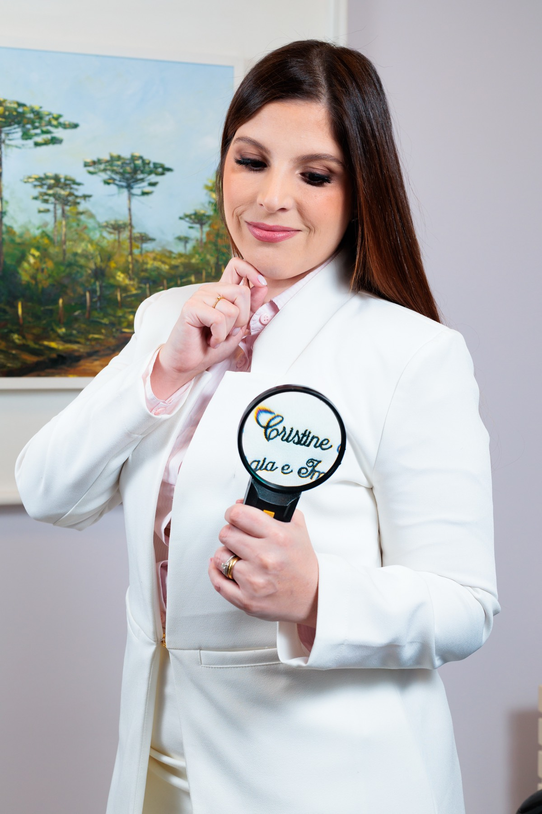

Alergia Ocular: do incômodo diário ao risco à visão
Coceira, vermelhidão e lacrimejamento constantes são sinais de alergia ocular — uma condição que, sem tratamento, pode comprometer a visão permanentemente.
Ler mais trending_flatPriorizamos o vínculo entre médico, paciente e família, transformando a consulta em um momento de acolhimento real.
Doutora pela UFPR e Professora Adjunta do Departamento de Pediatria — diagnósticos embasados em ciência.
Controle efetivo de sintomas respiratórios recorrentes que afetam a qualidade de vida e o sono.
Diagnóstico seguro e orientação para introdução e restrição alimentar em crianças e adultos.
Tratamento focado na integridade da pele e redução de crises de coceira e inflamação.
Avaliação do sistema imunológico para quem adoece com frequência acima do esperado.
Coceira, vermelhidão e lacrimejamento constantes podem indicar conjuntivite alérgica — que exige tratamento especializado.
Manchas e placas com coceira intensa que aparecem e desaparecem — avaliação detalhada é essencial para controle efetivo.
Reações a antibióticos, anti-inflamatórios ou outros fármacos requerem investigação rigorosa para garantir tratamentos seguros.
SOBRE MIM
Médica Pediatra · Alergista e Imunologista · Doutora pela UFPR
Professora da Universidade Federal do Paraná, trabalho com pesquisa clínica e acadêmica e ofereço atendimento de excelência para adultos e crianças com alergias respiratórias, dermatológicas, alimentares e de medicamentos, além de doenças da imunidade.
Ciência traduzida para o cotidiano das famílias.

Coceira, vermelhidão e lacrimejamento constantes são sinais de alergia ocular — uma condição que, sem tratamento, pode comprometer a visão permanentemente.
Ler mais trending_flatQuando não tratada, a rinite afeta o sono, o aprendizado e o humor. Conheça seus tipos, sintomas e o caminho para um tratamento eficaz.
Ler mais trending_flatA urticária crônica raramente tem causa alérgica. Entenda por que o diagnóstico é clínico e como os tratamentos modernos podem transformar sua qualidade de vida.
Ler mais trending_flat